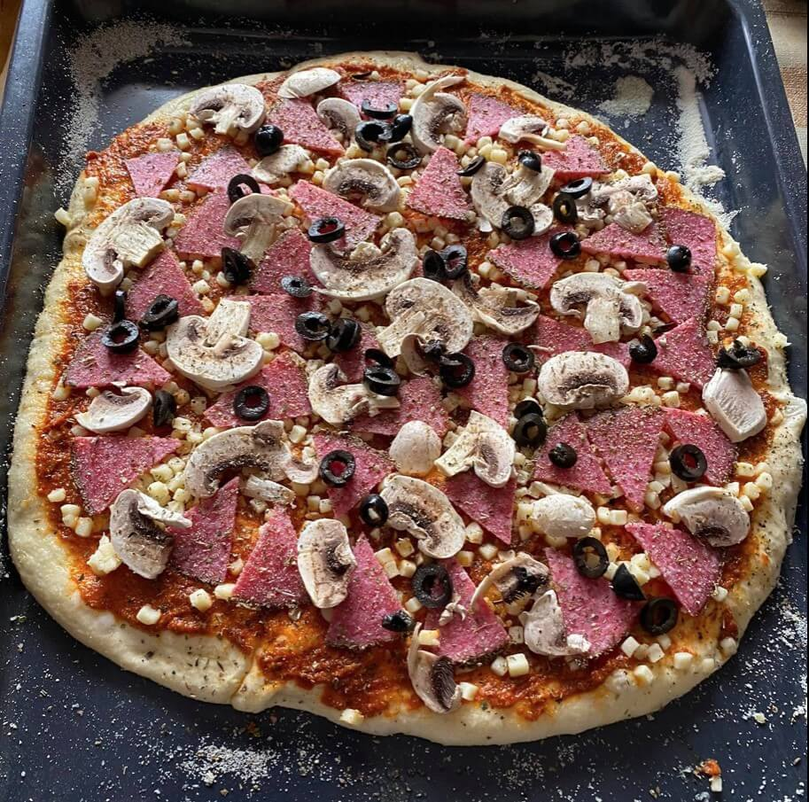
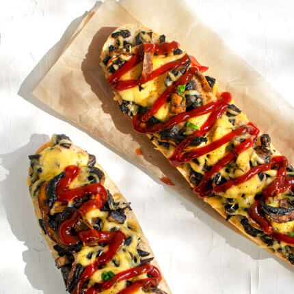

Pizza với nước sốt cà ketchup?
08.01.2020
 Bánh pizza phổ biến là loại có lớp vỏ rất mỏng và đi kèm với một chút dầu ô liu. Bạn cũng có
thể cũng đã ăn loại bánh pizza như vậy ở các nhà hàng Ba Lan.
Vậy người Ba Lan đang ăn loại bánh pizza nào ở nhà? Nguồn gốc của việc ăn pizza với tương cà
đến từ đâu? Ai đã nghĩ ra điều kì lạ như vậy? Ai có thể nghĩ đến việc phủ một tấn sốt cà
chua vào một chiếc bánh pizza mỏng ngon?
Lớp vỏ mỏng? Chà… Không phải ở Ba Lan! Ở nhiều gia đình Ba Lan, bánh pizza được làm bằng bột
dày, giống như bánh Foccacia dày, bông và thơm. Tạo một lớp bột như vậy mất khá nhiều thời
gian, nhưng nó rất đáng giá.
* Cho 1 khối men tươi vào 100ml nước ấm và chút đường để men nở đều,
* Sau đó, bạn có thể thêm một chút sữa để làm trắng, thêm dầu ô liu và muối
* Cuối cùng, bạn đổ bột mì vào - mức tối thiểu là nửa kg cho đến khi tạo thành một khối dẻo.
Để bột bông hơn, hãy để bột nở trong vài giờ.
...
Trên khay nướng, khi xếp bột, bạn có thể quết một lớp sốt cà chua và các nguyên liệu bạn yêu thích lên phía trên. Do lớp bột rất dày nên bạn có thể cho thật nhiều nguyên liệu vào. Bánh pizza sau khi nướng dày và xốp, nhưng bột thì hơi khô. 1/3 chiếc bánh pizza là nguyên liệu, nhưng tất cả phần còn lại là bột men nguyên chất. Có lẽ đây là lý do tại sao ở Ba Lan một chiếc bánh pizza như vậy được phục vụ với nhiều loại nước sốt. Pizza với nước sốt tỏi và tương cà rất phổ biến.
Zapiekanka Chúng tôi cũng có Pizza kiểu Ba Lan!
Nó thực sự ngon và thường bạn ăn nó với tương cà và mù tạt. Tôi nghĩ một trong những lý
do tại sao người già ở Ba Lan ăn pizza với tương cà là vì như một món ăn truyền thống,
chúng tôi cũng có "zapiekanka".
Thông thường chúng tôi làm "zapiakanka" ở nhà nếu chúng tôi không có gì để ăn! 😅
Trong mục "Thực phẩm", công thức của Zapiekanka sẽ sớm xuất hiện ~
Nhưng tôi sẽ tiết lộ cho bạn biết công thức dễ dàng mà bạn có thể thử làm ở nhà!
Cắt 2 lát bánh mì hoặc cuộn, phết một ít bơ lên bánh mì đó và bắt đầu cho các nguyên
liệu lên bánh mì
Thông thường món Zapiekanka chúng tôi làm với nấm nhưng chúng tôi cũng sử dụng giăm
bông, nguyên liệu tôi khuyên bạn nên làm điều đó lần đầu tiên :)
Đặt giăm bông, pho mát, rắc tiêu đen và cho vào lò nướng khoảng 5 phút (nếu trước đó bạn
đã làm nóng lò ở 200 độ)
Smacznego! Giờ thêm chút tương cà và thưởng thức nào :)
Viết bởi @Justyna & Robert